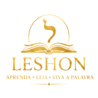

LeshonAqui aparecerá o conteúdo do seu PDF quando finalizarmos a integração.
Mergulhe no hebraico bíblico.
Conheça o caráter e o poder do Criador através de Suas revelações no hebraico.
Escolha o seu material de estudo
Mergulhe no contexto histórico e social das Escrituras.